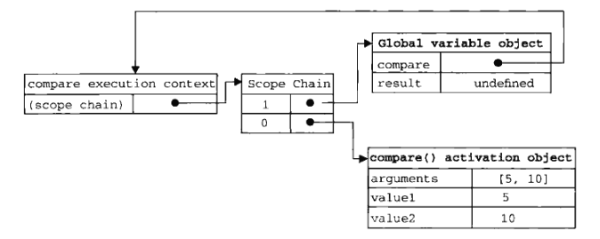

本文主要介绍JavaScript的发展、组成，在Http中的使用，基础语法，变量、执行环境、内存等内容
JavaScript的故事
经历
- 由网景公司研发的，在网络带宽很低的年代，用于在浏览器端对表单的数据进行验证，而降低带宽而发明的
- 由于JaScript在浏览器的成功，微软也在IE中增加了JScript的实现。
- 以JavaScript1.1为版本的标准化
结构
- 核心：ECMAScript
语言基础：- 语法
- 类型
- 语句
- 关键字
- 保留字
- 操作符
- 对象
文档对象模型：DOM
就是对XML解析的那个DOM浏览器对象模型：BOM
- 弹出新浏览器窗口的功能
- 移动、缩放和关闭浏览器的功能
- 提供浏览器详细信息的navigator对象
- 提供浏览器所加载页面的详细信息的location对象
- 提供用户显示器分辨率信息的screen对象
- 对cookies的支持
- XMLHttpRequest这样的自定义对象
在HTTP中的使用
- script元素
- async: 表示立即下载脚本，只对外部脚本文件有效
- charset：表示src属性指定的代码的字符集
- defer：表示脚本可以延迟到文件完全被解析和显示之后再执行，外部有效
- src
- type：text/javacript
标签的位置
按惯例，script元素都应该放在页面的head元素中，但这样意味着必须等到全部的JS代码都被下载、分析执行完成后，才能展示页面，导致页面加载的延迟。为此，一般把全部JS放在boday元素中页面内容的后面延迟脚本
有时会将script放在head中，而用derfer=”defer”属性，这样告诉浏览器立即下载，但延迟执行异步脚本
async 目的是不让页面等待两个脚本的下载和执行，从而异步加载页面其他内容。书中建议，异步脚本不要在加载期间修改DOM
语法基础
数据类型
- typeof
作为一种动态语言，JS需要有一种手段来检测数据类型：typeof操作符（在C/C++中也有）
返回的类型包括：
“undefined”
“boolean”
“string”
“number”
“object”
“function”：这似乎意味着函数并不是对象
undefined与Null
有一段比较有趣：从类型上看，JS有一种Null类型，而”undefined”其实是从Null派生的.而执行typeof(Null对象)结果是object。
声明而未初始化类型是”undefined”，声明对象后，直接赋值”Null”是告诉赋了个空值对象
number
JS也存在float禁止直接 == 的比较
Infinity:Number.MIN_VALUE:一般为5e-324, Number.MAX_VALUE:1.79e+308，超过这些范围则为Infinity 或者-Infinity
NaN:Not a Number
任意数/0 = NaN， NaN不与任意数相等，包括其自身数值转换
Number()
parseInt()
parseFloat()函数
toFixed(): 按参数的小数位返回数值的字符串表示var num=10
alert(num.toFixed(2)) // “10.00”
toExponential(1)： 同上，不过是以e表示的
toPrecision(1): 同上，参数表示的是数字的位数
字符串
字符串特点
ECMAScprit中字符串是不可变的。字符串一旦创建，值就不能改变。要改变某个变量保存的字符串，首先要销毁原来的字符串。
这一点与python一致转换为字符串
几乎每个值都有toStrig()方法，这个与Java类似
或者Stirng(变量)的方式在转换函数
charAt(1) ： 在某个位置上的字符var str = “hello world”
alert(str.CharAt(1)) // e
concat(): 拼接,参数个数不限，不修改原值
alert(str.concat(“!”, “thanks”))
切片：
slice(起始，结束)， substring(起始，结束)，substr(起始，个数)
str.slice(3, -1)
位置:
indexOf()和lastIndexOf() 与C++中的find（）与rfind（）类似
str.indexOf(“or”)
删除前后空格：
trim()
str.trim()
大小写转换：
toUpperCase()/toLowerCase()
str.toUpperCase()
Object类型
这个Object与Java的Object类似，就是说Object类型是所有其他实例的基础。
Constructor():构造函数
hasOwnProperty(属性名)，建材给定的属性在爱当前实例中。
isPrototypeOf(object)，传入的对象是否是另一个对象的原型
propertyIsEnumerable(属性名)，检查属性是否可以通过for-in来枚举
toLocaleString()返回对象的字符串表示
toString()：同上
valueOf()：返回字符串、数值或者布尔值表示。
操作符
++ 与 – 类似与 C/
+操作符，就是正号，需要注意的是对非数值使用，该操作符回想Number()转型函数一样对这个数进行转换。
== 与 === :早期的ECMAScript版本中的相等和不相等–先转换再比较。===则仅比较而不转换。
流控制语句
with 语句：with语句的作用是将代码的作用域设置到一个特定对象中。这个有点像python的with语句。严格模式下不允许使用with语句，被认为是语法错误
函数
理解参数
ECMAScript中的所有参数传递都是值，不可能通过引用传递参数。
ECMAScript 函数并不介意传递进来多少个参数，也不在乎传入的参数是什么类型。
即使定义的函数只接收两个参数，在调用这个函数时，也未必一定要传递2个参数。
原因是ECMAScript中的参数在内部是用一个数组来表示。函数接收到的始终都是这个数组，而并不关心数组中包含哪些参数。在函数体内可以通过arguments对象来访问这个参数数组，从而获得传递给函数的每一个参数。
1 | function doAdd(){ |
关于arguments有一点比较有趣，它的值永远与对应命名参数的值保持同步。
但它们访问的内存空间是独立的，但它们的值会同步。但这种同步也是单向的，修改命名参数不会改变arguments中的对应值，而修改arguments会改变命名参数的。
变量、作用域和内存
变量
基本类型与引用类型
ECMAScript变量可能包含2种不同数据类型的值：基本类型值和引用类型值。
基本类型包括5种：Null,Undefined,Number,String,Boolean
引用类型就是最有一种Object类型。
多数语言中String类型都是对象：如C++/Java，因而是引用类型，但JavaScript并不是。基本类型在内存中都是按值来存储【这一点跟python还有一点区别，python的小整数都是相同的内存】
而引用类型跟C++/C的思路一直，变量名仅保留其指针，对变量名的复制仅仅是浅copy，内存中并不会创建一份新的引用类型。传递参数
对于引用类型的传参，是挺有意思的，首先形参是重新定义了一个对象，传递的值是引用类型值的指针。若使用这个对象直接修改属性，则函数外的属性也会修改。但如果这个形参对象重新指向别的对象，则外边的对象便不会修改了,就是这个指针已经指向别处了。
1 | function setName(obj){ |
- 检测类型
对应基本类型用typeOf()进行对象的检测
对于引用类型，使用instanceof来判断：这个与C++类似
执行环境及作用域
基础概念

所谓的执行环境，其实就是函数的环境一层一层的压栈，然后出栈的过程，对于作用域的查询也与C语言类似：先找局部、然后上一层的栈..直到全局变量。
但与之不同的是，每一个执行环境都有一个与其关联的变量对象（variable object），环境中定义的所有变量和函数都保存在这个对象中。
当代码在一个环境中执行时，会创建变量对象的一个作用域链（scope chain）。作用域链的作用，是保证对执行环境有权访问的所有变量合函数的有序访问。这个作用域链用来保存各个执行环境的变量对象。
其他
- 需要注意一点：JavaScript中没有块级作用域：即不能像C/C++通过{}来设置一个作用域.
1 | for (var i=0; i<10; i++){ |
- 还有一个比较坑
在非严格模式下如果在函数内定义一个变量没有var标志,那么这个定义的变量是全局变量.
垃圾收集
标记清除
标记清除用于局部变量的清除引用计数
与python类似.也存在严重的循环引用问题。
但python中有隔代清理机制，没见JavaScript有介绍。注意：
对于不同的对象，将变量直接赋null。这个在有垃圾收集机制的语言中通用。如Java\Pthon。即使在C++/C中，也建议将delete后的指针赋null，防止野指针。